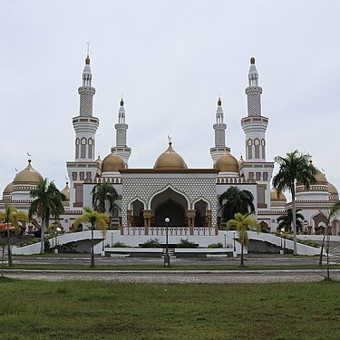
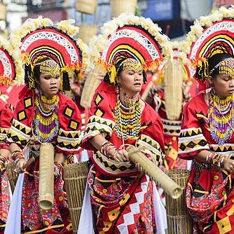
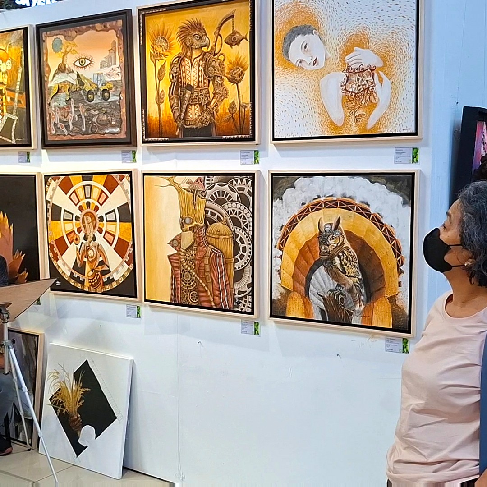

This section examines the "why" behind the art—how history and the environment have shaped these island traditions.
Focus: Cultural Influences, Materials, and Social Significance

Islamic influence is seen in the preference for complex floral and geometric patterns instead of human-like figures in art. This style is evident in Okir designs, brassware, and mosque architecture in Mindanao. These artistic traditions reflect the spiritual values and cultural heritage of Muslim communities in the region.

Indigenous Lumad practices are seen in the use of natural dyes and traditional weaving methods passed down through generations. Sacred weaving rituals often express a connection between the people and the spirits of the land. These traditions reflect the deep cultural beliefs and heritage of indigenous communities in Mindanao.

Art in Mindanao is meant to be seen, appreciated, and shared with others. Exhibits play an important role in organizing finished works to tell stories of community identity, culture, and history. Through exhibitions, people can better understand and value the rich artistic heritage of Mindanao.